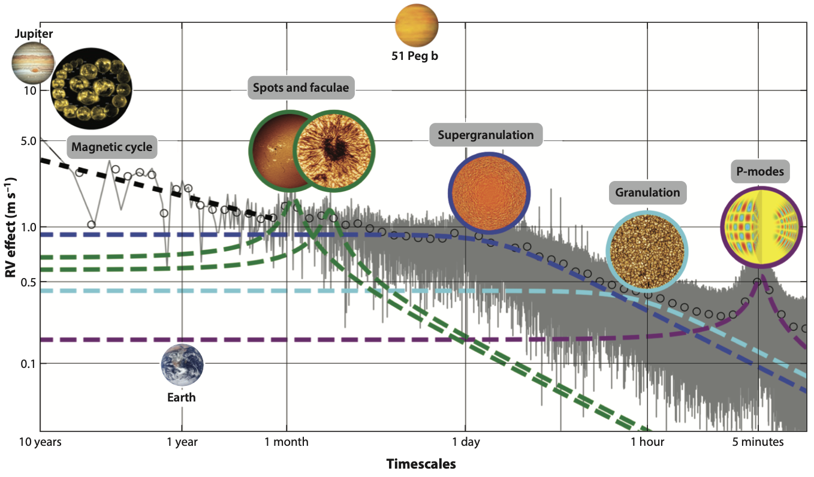

EPRV x Solar Physics Workshop -- On-line -- June 10th & 11th, 2026
The Extreme Precision Radial Velocity Research Coordination Network (EPRV RCN) is organizing an on-line workshop focused on the synergies between EPRV and solar physics! Exact times are to-be-confirmed, but it will likely run from 8a - 10:30a Pacific time (4p - 6:30p UK time) on Wednesday, June 10th & Thursday, 11th to allow for easier participation across multiple time zones. Connection details and full event agenda will be distributed via e-mail to all RCN members, to anyone who submits an abstract (see below), and also to anyone who indicates their interest using this registration form.
The workshop will feature a combination of invited talks, contributed talks and panel discussions by members of the solar physics and solar-focused EPRV communities. Confirmed invited speakers and topics include:
- Annelies Mortier [University of Birmingham]: Overview of the EPRV Solar landscape
- Bill Chaplin [University of Birmingham]: Overview of the Solar Physics landscape
- Serena Criscuoli [NSO]: Overview of DKIST
- Alexei Pevtsov [NSO]: Overview of ngGONG
We are most interested in presentations that explore instruments / data products / analysis techniques targeting the solar phenomena that cause spectral line-shape deformations and spurious RV signals. This could include (but is definitely not limited to): work that uses images/magnetograms from SDO, irradiance data from the instruments on the ISS, seismology data from GONG, or oscillation observations from BISON etc.
Our goal is to explore potential synergies amongst data/facilities/analysis methods between the EPRV solar facilities and the solar physics community. And so while talks focused solely on data from EPRV solar telescopes are also welcome, especially if presenting novel approaches to identifying/modeling/mitigating solar variability, the organizing committee will prioritize submissions that highlight synergies between solar facilities and EPRV analysis efforts. Ideally this will raise awareness of the resources developed by each community that may be of assistance to the other and potentially spark new collaboration ideas!
If you would like to submit an abstract for consideration please do so via this Google Form. by May 22nd, 2026! The RCN steering committee will review submissions and alert those chosen for talks no later than the following Friday, May 29th, roughly two weeks ahead of the workshop.
If you have any questions please reach out at: eprv-rcn.leads@jpl.nasa.gov
Additional workshop context:
The Extreme Precision Radial Velocity (EPRV) community aims to robustly detect temperate, Earth-mass planets
orbiting nearby Sun-like stars via Doppler shift signatures in high resolution, visible spectra. For context,
the RV signal of the Earth around the Sun is only 9 cm/s, while the variability introduced by (primarily) magnetic
phenomena on the Sun are 1-5 m/s even during low activity spans. The largest amplitude effects arise from spots
and faculae, alongside their modulation over the magnetic cycles, but oscillations, granulation, and super-granulation
remain a challenge for our community as well; supergranulation in particular may present one of the most fundamental
barriers to exoplanet detection due to its longer timescale and poorly understood origin (see figure below and the recent
Precise Radial Velocities
Annual Reviews article for further comparison between relevant signals). We are working to disentangle these phenomena
from the wholesale Doppler reflex motion induced by planetary companions by identifying their signatures in the spectra
across the visible domain used for exoplanet hunting.
Within the RV field, small diameter, solar-telescopes that feed our high resolution (R~100K), visible (~400-900nm) spectrographs have collected years of stabilized, high cadence, high SNR, disk- integrated spectra of the sun (see, e.g., Dumusque et al. 2026). We are using these to disentangle line deformations described above from true Doppler shifts, sometimes via comparisons to solar data from (e.g.,) the Solar Dynamics Observatory and sometimes via RV-only analyses.

Summary of the approximate timescales and RV semi-amplitudes of the stellar phenomena that most directly impact EPRV science efforts for a Sun-like star, with the RV semi-amplitudes of Earth, Jupiter, and 51 Peg b for reference. These phenomena span timescales from minutes to decades and RV semi-amplitudes of cm/s to dozens of m/s which poses significant challenges for designing RV survey and analysis techniques that can accurately sample, model, and mitigate their impacts. The background grayscale image represents the solar power spectrum density from Al Moulla et al. (2023) with fitted contributions for the different stellar phenomena as colored dashed lines. Figure 9 from Burt et al. 2026, adapted from Al Moulla et al. (2023) and a figure concept from Ryan Rubenzahl.